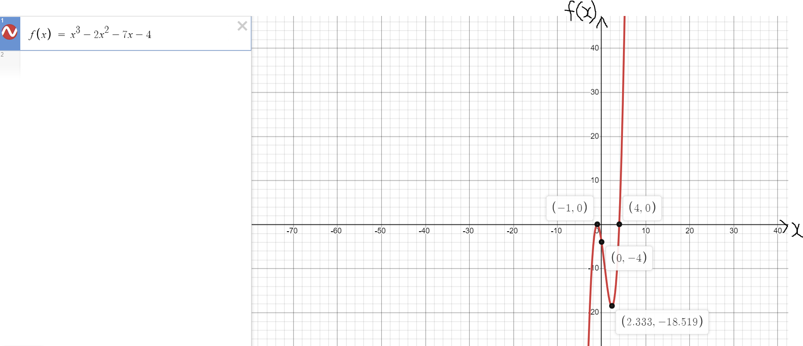
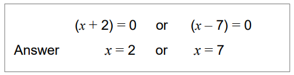
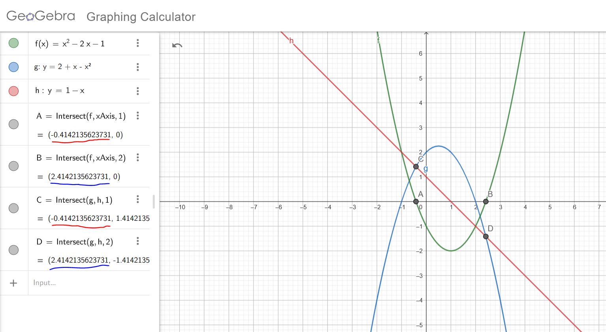

For ACT Students
The ACT is a timed exam...60 questions for 60 minutes
This implies that you have to solve each question in one minute.
Some questions will typically take less than a minute a solve.
Some questions will typically take more than a minute to solve.
The goal is to maximize your time. You use the time saved on those questions you
solved in less than a minute, to solve the questions that will take more than a minute.
So, you should try to solve each question correctly and timely.
So, it is not just solving a question correctly, but solving it correctly on time.
Please ensure you attempt all ACT questions.
There is no negative penalty for a wrong answer.
For SAT Students
Any question labeled SAT-C is a question that allows a calculator.
Any question labeled SAT-NC is a question that does not allow a calculator.
For JAMB Students
Calculators are not allowed. So, the questions are solved in a way that does not require a calculator.
Unless specified otherwise, any question labeled JAMB is a question from JAMB Physics
For WASSCE Students: Unless specified otherwise:
Any question labeled WASCCE is a question from WASCCE Physics
Any question labeled WASSCE-FM is a question from the WASSCE Further Mathematics/Elective Mathematics
For NSC Students
For the Questions:
Any space included in a number indicates a comma used to separate digits...separating multiples of three
digits from behind.
Any comma included in a number indicates a decimal point.
For the Solutions:
Decimals are used appropriately rather than commas
Commas are used to separate digits appropriately.
Solve all questions.
Show all work.
Check your solution for any question involving the factoring of quadratic trinomials. (Specifically for my
Students.)
Assume all expressions to be polynomials


